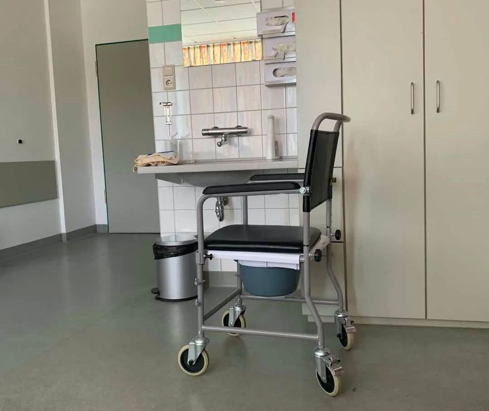

新加坡、澳大利亚“封国”！意大利全国“停产”，美国确诊人数突破3万…
原文链接 备份链接 截至北京时间3月22日12时，除中国外，184个国家和地区累计确诊222707例新冠肺炎，“钻石公主”号邮轮712例。 当前，欧美疫情仍旧快速蔓延。其中，意大利病例突破5万例，总理孔特要求全国停止所有非必要的生产活 …

德国新冠肺炎累计确诊人数已经超过3万人，在欧洲仅次于意大利和西班牙。
默克尔3月18日发表电视讲话时表示，这是德国自二战以来面临的最大挑战。
官方发布和民间认知是撕裂的，尽管德国有多位病毒学家都发出了警告，强调年轻患者也会出现重症和死亡，但德国民众不以为然。
德国病死率低至0.4%，最直接原因是有一套强大的医疗保障体系。这里有两个关键因素，一是疑似病例的高检测率，二是重症病人的高救治率。
一位身处疫情中心的华人感到更大的担忧。在她看来，德国的医疗水平固然值得信赖，但民众对于新冠病毒的错误认知正在摧毁这一切。

这天上午，李菲（化名）和自己的德国丈夫大吵了三回。
这个远嫁德国的90后女生，第一次感受到“东西方文化的撕裂感”。她多次试图劝说外出上班的丈夫戴上口罩，但得到的回复永远是，why so serious（何必这么认真）？
李菲所生活的锡根市位于德国新冠疫情最严重的北威州。截至发稿时，北威州共计8011例确诊，占德国确诊总数的四分之一以上。尽管德国已于23日起实行最严“禁足令”，但外出上班依然被允许。
“我不明白德国为什么不学习中国，让企业停工，或者让员工在家里办公。”李菲告诉八点健闻，因为丈夫外出时不愿意佩戴口罩，她一直生活在“可能被感染”的恐惧中。除此之外，她的恐惧还来自于家里5岁的儿子和肚子里 4个月的宝宝。
同样的对立情绪也发生在王茜（化名）的家中。作为一名德国企业的中国区负责人，她在汉堡生活了20多年，有一个德国丈夫，还有一个在海德堡大学学医的女儿。
在这个三口之家中，对疫情保持高度警惕的王茜是少数派，因为要求丈夫和女儿回家后必须洗手，给衣服消毒，她被女儿视为“得了严重的心理疾病”。
“他们就觉得我是在制造恐慌情绪，我女儿甚至跟我说，妈妈，如果这个病真的像你说得那么可怕，你就应该把今天的晚餐当做是最后一餐，享受此时此刻的美好时光，而不是陷入无尽的担忧之中。”
最后，不堪忍受的王茜独自回到了中国，为这场家庭内部的争端暂时划上了句号。
越来越多的事实证明，德国并不是欧洲的幸存之地。在经历了初期的平稳之后，德国的疫情从3月中旬开始爆发。截至发稿前，德国新冠肺炎的累计确诊人数已经超过3万人，在欧洲仅次于意大利和西班牙。
热衷社交的一对夫妇传染了很多人
在李菲的印象中，德国的疫情来得极为突然。
2月初，在老家山东过完春节的她带着儿子返回德国。当时，国内（尤其是武汉）正是最危险的时刻，每天都有两三千例的新增病例，火神山和雷神山医院还在建设当中，医疗资源吃紧，病人一床难求。
而德国则完全是另一番景象。1月27日，德国确诊了首例新冠肺炎患者，并对其进行隔离治疗。此后，德国的确诊人数差不多是以两天新增1个的速度增长。直到2月24日为止，德国全境的确诊人数依然维持在16人，其中有14例位于德国南部的巴伐利亚州。
“当时我还担心能不能顺利入境，毕竟是从中国回来的，但事实上没有任何管制，”李菲说，回家的过程非常顺利，途中没有任何人给她风险提示。但出于安全考虑，她自己在家隔离了14天。
2月25日，是德国疫情爆发的第一个关键点。当天，位于德国北部北威州的海因斯贝格县报告了该县的首例确诊患者，一名47岁的男子。因为本身就患有肺癌，该男子被送到医院时病情已经很危重。第二天，他的妻子也被确诊，症状较轻。此后，新冠疫情在海因斯贝格县爆发，截至3月9日，这个总人口约4万的县确诊了323例新冠病例，占德国同期总数的近三分之一。
一位生活在海因斯贝格县的华裔人士告诉八点健闻，该县早期的确诊病例，大部分都和这对夫妻有过密切接触。这对夫妻热衷社交，曾在2月15日参加了该地区的冈格尔特狂欢节，才导致病毒在人群中大范围传播。
“在那段时间里，除了北威州以外，其它地方都是零星的病例，所以并没有在德国引起恐慌。即便是在北威州，学校还是正常上课，大型球赛也都照常进行。”上述人士表示，根据她的观察，德国的确诊人数是从3月7日之后慢慢上升的，原因是当天进行的多场德甲联赛，场均观看人次达到了5万人。
根据官方数据，从3月11日开始，德国的单日新增病例从200例左右一下子猛增到800多例，事态迅速升级。3月12日，德国总理默克尔向全体德国民众呼吁，放弃参加不必要的社会活动。3月16日，疫情最严重的北威州发出通告，宣布学校停课，并陆续关闭其它公共场所，餐馆在下午3点前必须关门。
3月18日，默克尔就新冠疫情发表电视讲话，这是她担任总理14年来，首次在传统新年以外发表电视讲话。她表示，这是德国自二战以来面临的最大挑战。同时她承认，政府采取的关停性限制措施对民主社会的自我认知带来了冲击，这在德国历史上前所未有，但为了挽救生命，这些措施不可或缺。
撕裂的官方公布和民间认知
尽管国家最高层的立场足够鲜明，但李菲依然觉得“不那么安全”。
在默克尔发表电视讲话的当天，李菲因为突发腹泻被送到锡根当地的医院。这是一家市级医院，医疗条件尚可，她的第一个孩子就在这里出生。疫情爆发后，这里收治了部分北威州的新冠病人。
“我的第一印象就是不安全，不管是在救护车上，还是到了医院以后，和我接触的所有医生和护士都没有戴口罩，更没有穿防护服。”李菲的担心源于武汉，她从国内早期的报道中得知，武汉多家新冠定点医院都发生了医护人员感染的情况，并且这些医院只收治新冠病人。
事情后来出现反转。在得知她2月初从中国返回的事实后，主治医生的脸色一下子变了，开始把她作为新冠疑似病例来处理。医院为李菲单独安排了一间隔离病房，说是隔离病房，其实就是在一间单人病房门口挂上了“不许进入”的标志。因为无法使用公共卫生间，李菲还得到了一把自带便桶的残疾椅。

△ 李菲在医院的“移动厕所” （受访者供图）
3天后，李菲的腹泻症状有所缓解，出院回家。在整个过程中，她没有被安排做核酸检测。“我的主治医生告诉我，核酸检测的数量是被严格控制的，会倾向于症状更危重的病人。而且像我这样的情况，即便做出来是阳性，也会被要求回家隔离。”
王茜不认同这项政策，她认为武汉早期的教训就是不科学的居家隔离会导致家属感染，并且德国也已经出现了类似的案例。她所在的汉堡，有25个从意大利滑雪区回来的确诊病人，因为症状较轻，被建议居家隔离，结果这25个人总共感染了86个家属。
起初，她觉得不可思议。后来，她看到越来越多类似的状况，比如说学校停课了，学生们就每天坐公交车玩，开PARTY。她所在的公司照常上班，没有人戴口罩，只是在大门口放了一瓶免洗消毒液。还有她那个“意见不合”的女儿，动不动就去超市买点东西，在没有任何防护的情况下。
后来，她开始意识到问题出在哪儿。有一天，她的德国同事给她发来一张统计图表，上面显示这个病在20岁以下几乎没有死亡，50岁以下的死亡人数占1.3%，绝大多数的死亡患者都在80岁以上。“意思就是这件事和我们普通人没有任何关系。”
官方发布和民间认知也是撕裂的。王茜告诉八点健闻，德国有多位病毒学家都发出了警告，强调年轻患者也会出现重症和死亡。世界卫生组织总干事谭德赛也在20日的记者会上做了类似的发言，但德国民众依旧不以为然。
“我很苦恼，是不是信息的传播在哪里给堵住了。我们其实不需要吹哨人了，已经有这么多血淋淋的事实摆在眼前，可为什么他们（德国）那边就一点都不害怕，真的是‘迷之自信’的感觉。”
病死率低至0.4%，有两个关键原因
王茜所说的“迷之自信”，在德国真实存在，这背后有很多原因。
首先，从数据上来看，德国的现存确诊总数虽然达到3万，和意大利西班牙同属欧洲重灾区，但死亡人数却远低于这两个国家。意大利死亡人数已经破6000，西班牙破2000，德国还维持在100多人，病死率为0.4%。
德国病死率低的最直接原因是德国有一套强大的医疗保障体系。这里有两个关键因素，一是疑似病例的高检测率，二是重症病人的高救治率。
根据德国《明镜周刊》的报道，德国在新冠病毒的检测数量上比欧洲其它国家要多得多。以英国为例，英国到3月18日一共检测了大约5.4万人，而德国到3月18日的数据，已经检测了超过10万人。
更关键的是，德国的检测试剂能够在病毒初期（咽喉繁殖时）就检测出阳性，所以德国确诊的80%以上的患者都是轻症，在这个阶段进行治疗，能够显著降低死亡率。
而在重症病人的救治上，德国拥有欧洲最充足的医疗设施储备。根据德国卫生部的数据，德国的重症监护病房约有2.8万张床位，而法国只有7000张，意大利5000张，英国4000多张。另外，德国的呼吸机数量也是冠绝欧洲，目前已有2.5万台，最近又订了1万台，明年可以到货。相比之下，英国只有5000台呼吸机。
除此以外，感染病例的年龄偏小也是德国能够控制死亡率的重要因素。根据德国卫生部发布的病例年龄样本，德国大约70%的确诊者年龄在20-50岁之间，身体状况良好，恢复能力较强。而据彭博社报道，意大利的确诊病例平均年龄为63岁，死亡病例的平均年龄为79.5岁。
为什么德国和意大利的老龄化程度接近，但感染者中的老年人比例低那么多呢？李菲告诉八点健闻，在她看来，这和家庭文化有关。意大利人喜欢群居，常常是祖孙三代住在一起，老人被感染的风险自然就高。而德国崇尚小家庭，子女结婚后一般都会搬出去住，和父母只是偶尔拜访。
“我的公公婆婆住在离我们10分钟车程的地方，平时我们每周会去看望一次，但这次疫情爆发后，德国官方就建议说，暂停拜访父母，我觉得这是德国在保护老年人方面做得很好的地方。包括我还知道，有些超市会专门设立一个老人购物时间，降低他们的感染风险。”
△ 一家超市收银员的自我防护 （受访者供图）
重症床位被占满的临界点已到
目前来看，德国的医疗体系还未被疫情击穿，但这种风险正在与日俱增。
上海复旦大学附属华山医院感染科主任、上海市新冠肺炎医疗救治专家组组长张文宏曾在3月17日对德国疫情做出过预判。当时，德国的确诊总人数还没有过万，单日新增在1000人左右，大多数城市的病例数还是个位数。张文宏认为，德国有能力处理好散发病例。
彼时，德国的2.8万张重症床位，已经被占用超过80%。于是，张文宏也做出了预警，“当一个城市有大量病人同时出现的时候，最大的一个问题是床位被占满，造成重症病人住不进去滞留在外，这是造成病死率特别高的一个原因。”
张文宏的担心正在演变成现实。一周时间，在松散的疫情防控中，德国的确诊总人数已经翻了三倍，单日新增病例超过6000例，接近意大利的峰值水平，这无疑给德国的医疗机构带来了更大的压力。
尽管已经回到了国内，但每天仍在关注德国疫情形势的王茜也越发感到紧张。她告诉八点健闻，德国政府最初的想法就是，把医疗资源留给重症病人，让轻症患者留在家里隔离。因为只有这样，医生和机器才不会超负荷工作。但疫情到了这一阶段，很难保证某个城市的医疗系统不会首先崩盘。
“就我的理解，这个病是有一个病程的，刚开始都是好好的，但如果不进行治疗的话，突然哪一天就会加重。真到了爆发的临界点上，我相信德国和意大利也差不了太多。”
身处疫情中心的李菲感到更大的担忧。在她看来，德国的医疗水平固然值得信赖，但民众对于新冠病毒的错误认知正在摧毁这一切。几天前，她的邻居还给她发来热情的短信，邀请她去做客，顺便让两家的孩子好好玩上一会。
“你知道吗，我有时候都觉得德国在控制病死率上的表现并不是好事，因为它让所有人更加坚信，新冠病毒不过是另一场流感而已。”
毛晓琼|撰稿
微信号：234379189
谭卓曌|撰稿
微信号：tzz19930706
吴靖|撰稿
微信号：1136352312
季敏华|责编
微信号：janejiminhua
致读者：
“八点健闻”公众号将于4月11日恢复更新。在此之前，我们在“八点健闻Plus”发表报道。敬请关注。
我们尊重原创版权，未经授权请勿转载。
郑琪|授权转载
微信号：1281949389
商务合作
上海：leslee 13916263824
北京：Jessie 13911125922
反馈交流，加入核心读者社群
请扫码联系健闻君

让朋友们看到你也在看
↓↓↓
原文链接 备份链接 截至北京时间3月22日12时，除中国外，184个国家和地区累计确诊222707例新冠肺炎，“钻石公主”号邮轮712例。 当前，欧美疫情仍旧快速蔓延。其中，意大利病例突破5万例，总理孔特要求全国停止所有非必要的生产活 …
原文链接 备份链接 国内出现首例境外输入关联病例。美国单日新增超过7000。德国病死率不到0.4% 文 |**《财经》数据研究员 徐进 ** 图 |《财经》视觉中心 编辑 |** 郝洲** 一、国内出现首例境外输入关联病例 图1 今日国 …
原文链接 备份链接 从股市的表现来看，市场更倾向于认同用短期的不便和经济痛苦来换取对病毒的控制 文 |《财经》特派记者 金焱 发自华盛顿 编辑 | 苏琦 新冠肺炎疫情持续肆虐，美国和欧洲为应对疫情影响经济，纷纷出台各种刺激救助政策，试图 …
原文链接 备份链接 “外防输入”已是当前疫情防控重中之重。海外累计确诊病例超过10万，世卫组织呼吁各国扩大监测范围。欧洲更多国家关闭边境 文 |《财经》数据研究员 徐进 图 |《财经》视觉中心 编辑 |** 郝洲** 一、北京重启小汤山 …
原文链接 备份链接 中国现有确诊病例已降至1万以下。国内已采取最严密的入境防疫检测措施。美国继续在快车道上狂奔，但基本防疫措施已经得到重视和加强 文丨《财经》数据研究员 徐进 图丨《财经》视觉中心 编辑丨郝洲 一、境外输入病例北京居首， …